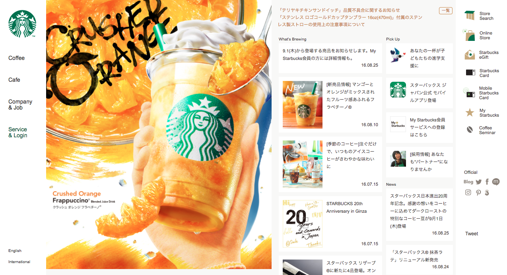
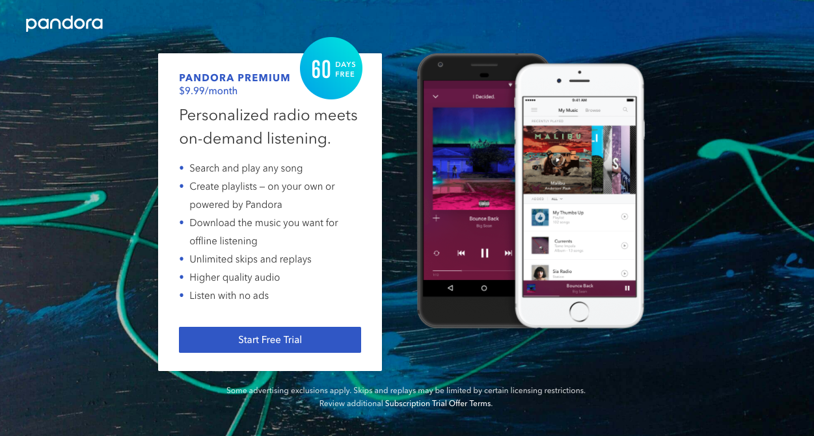
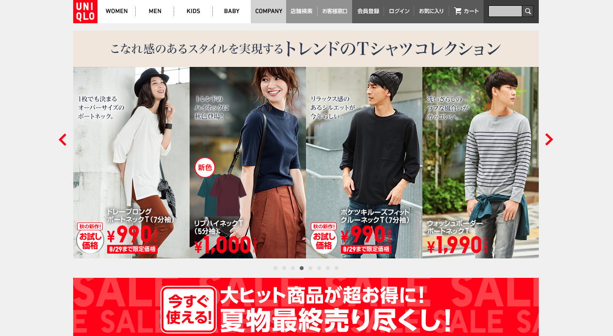
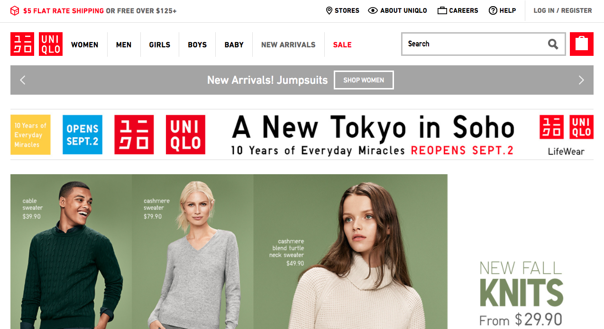
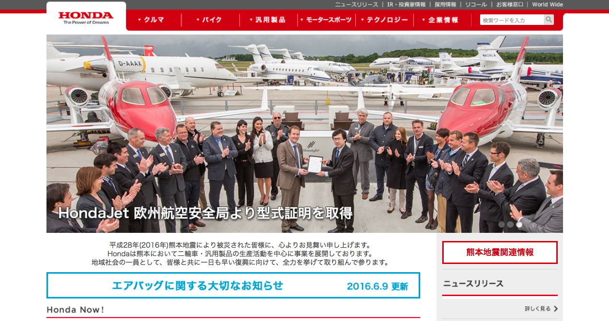
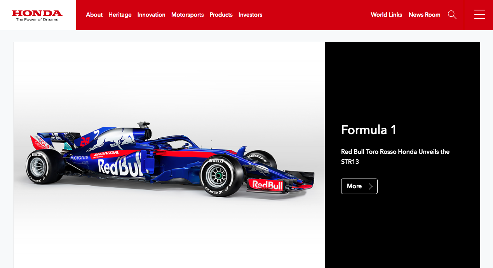

In Summer 2016, I interned at Mitsue-Links, Co., Ltd., a web design agency in Tokyo, and had the opportunity to learn about UX in Japan. Here I will describe the differences in design that I noticed during my internship. Due to agency policies, I cannot discuss specific projects or details about those projects, so I will use illustrative examples.
As someone who has grown up in the United States, I was surprised by the design of Japanese webpages. Jam-packed with information, Japanese websites can be overwhelming. Here is an example.
(starbucks.co.jp, August 2016)
Coming from a Western design viewpoint, the Starbucks Japan webpage makes several design "mistakes", including:
However, this type of design is commonplace in Japan. Why is this the case?
During the course of my internship, I was involved with projects in which overseas web services wanted to expand into Japan, as well as projects in which domestic web services wanted to improve their usability. These projects helped me understand the underlying motivations behind the designs of Japanese websites. I found that the reasons were divided into roughly three categories: consumer behavior, societal factors, and language differences.
Japanese users tend to be cautious about unfamilar products. An overseas client attempting to enter the Japanese market wanted to test their app on Japanese users. Most participants in the user study said that if they were going to download the app, they wanted to know if it was trustworthy, either through friends/family speaking positively about the app, or by popularity rankings.
Continuing on the theme of trust, Japanese users found overseas websites to be lacking in information. What does this mean? Here I will give Pandora's premium plan page as an example.
(pandora.com/premium, August 2016)
A similar page to this was shown to Japanese users in a user study. Like Pandora, the service had both free and premium plans, as well as a free trial of the premium version. The client had a similar page to show users, in order to determine how to attract potential subscribers. However, most of the participants responded that they would probably not start using the service. Why? Because the premium features were not made clear enough. For some features, users wanted the technical specs, and for other features, users wanted description of what the features are supposed to do.
On the Pandora site, for example, users would probably want objective details on what "higher quality audio" entails, i.e. how it was measured. They would probably want to know what features such as "skip" or "replay" are supposed to do, which may not be universal features understood by all. Also, users would probably want to know more about whether payment details are required upfront. Users wanted such information to be given either on the same page, or an easily accessible link to learn more. Similarily, on other occasions, when shown landing pages with minimal text, large photos and/or use of white space, users wondered where they could get more information.
So in other words, Japanese sites tend to show as much information as possible on the front page, as a way to invite trust. It seems that the idea in Japan is that services and companies should not hide what they are doing.
If one commutes by train in Tokyo during rush hour, they would probably notice the crowdedness, as well as the almost deathly silence. Also noticeable are all the people with their phones out. Perhaps this is not a strange sight to see these days, but it was true even before the advent of the smartphone.
Even before the smartphone, Japanese users were accessing the web on their mobile phones. In order to get webpages to fit on those small screens, skinny columns were needed. Below is the mobile version of the Starbucks Japan website from earlier.
(starbucks.co.jp, August 2016)
With the mobile version of the site, each of the columns becomes a separate section, and it is a lot less visually busy. The image that was on the left is shown completely on its own as a hero image. When seen on mobile, the Starbucks Japan webpage may have more visible information than Western websites, but is overall quite close to many Western mobile websites. It is as if websites are designed for mobile and then web, rather than the other way around.
Japanese is a logographic language that uses Chinese characters called kanji in writing. It is highly complex compared to the English alphabet. It also tends to take up less space to convey meaning than English does. What does this mean for design?
Firstly, this means that compared to English, the text will almost always look more visually cluttered than English. Secondly, this means that Japanese users are accustomed to having a large amount of information displayed all at once. So while we may see overly cluttered text, Japanese users most likely do not.
There is not a huge difference in the general user research process used in Japan vs. the United States. After meeting with stakeholders, a research plan is created, users are recruited, a script is written, and user interviews are conducted using a variety of standard methods.
However, generally speaking, one has to be careful about how to word questions, even more so than in the West. Questions need to be direct. If the question can have multiple interpretations, they are seen as unclear. It can make the participant uncomfortable if they sense they may need to ask for clarification.
For example, an interviewer might ask "What is the most appealing thing about this product?" to a participant. That seems like an innocent enough question. An example answer might be "That it is a good value for the price". However, a Japanese participant may ask what "appealing" means, or from whose point of view they should consider the question from. Instead, the question could be worded as: "What do you like best about this product?" to clarify that it is based on their own set of standards, as well as have a clearer meaning overall.
Questions that are especially challenging are icebreaker-type questions. I've always been taught that icebreaker questions are important to help warm the participant up.However, there is a lot of potential for unclear questions, as I have illustrated above. This was especially difficult in the process of translating scripts for the user research of overseas products.
Although I talked about Japanese websites that are visually loud in comparison to Western websites, not all Japanese websites are like that. Some newer companies, or companies that are popular abroad, have sleeker websites.
Some Japanese brands have created designs that are less visually busy. For example, here are the Japanese and American websites for Uniqlo (a Japanese brand).
(uniqlo.com/jp, August 2016)
(uniqlo.com, August 2016)
Uniqlo Japan's website is not very different from the US version, though the US version was designed separately. Of course, branding guidelines likely played a large part in the high similarity, but the original design was kept largely intact, especially compared to other websites with different Japanese and US versions.
Other companies have a Japanese version and an international version in English, off of which other country's webpages are based. Honda is one such example.
(honda.co.jp, August 2016)
(world.honda.com, August 2016)
For Honda's websites, if one ignores the Honda logo, they almost look like two websites of separate companies. Honda Japan's website uses a tabular design with tabs at the top, and if one were to scroll down, there are many columns, in a similar fashion to the Starbucks Japan website from earlier. On the other hand, the international Honda shows a lot less in the same area.
While there are still many websites in Japan that have designs that are thought to be "bad" from a Western point of view, that may very well be changing. Some international or newer products may have more modern or minimalistic designs to better appeal to their audience. Others may have a domestic and international site so they can appeal to both Japanese and Western audiences. For the most part though, the design choices in Japan do follow results from actual user interviews. So while we in the West may think the visually busy websites do not follow good design principles, when considering the user base, the designs make sense.